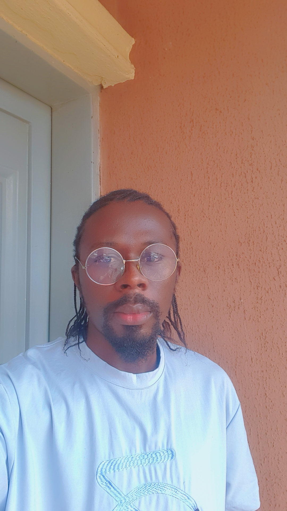

TECH WRITER / PRODUCT THINKER / CYBERSECURITY STUDENT
Making sense
of technology.
Building what’s
next.
Hi, I’m Damilare Oyewale. I turn complex ideas into clear stories and explore products that solve real problems.

10+ YEARS IN CONTENTNOW STUDYING CYBERSECURITY
A LITTLE CONTEXT
Clarity is where
good products begin.
I’m a tech writer, aspiring product manager, and technology enthusiast with over 10 years of experience creating engaging, informative, and SEO-driven content.
My work spans consumer technology, digital marketing, technical writing, and content strategy. I’m expanding my knowledge in product management, software development, and cybersecurity, with a particular interest in technology, business, and user experience.
More about my journey →IDEAS IN EXPLORATION
Three problems.
Three possibilities.
LEARNING, ONE TASK AT A TIME
Make room for progress.
Organise academic tasks and keep track of what’s done.
Open academic planner ↗